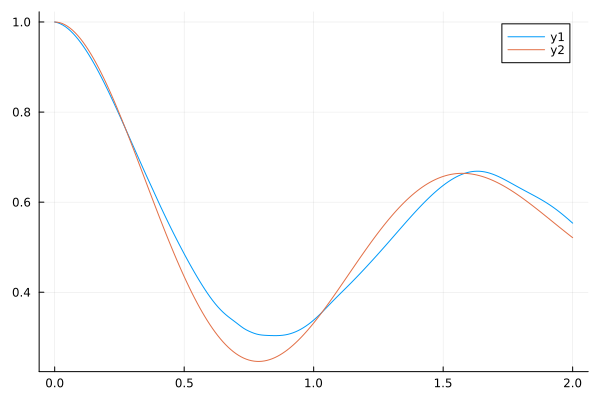
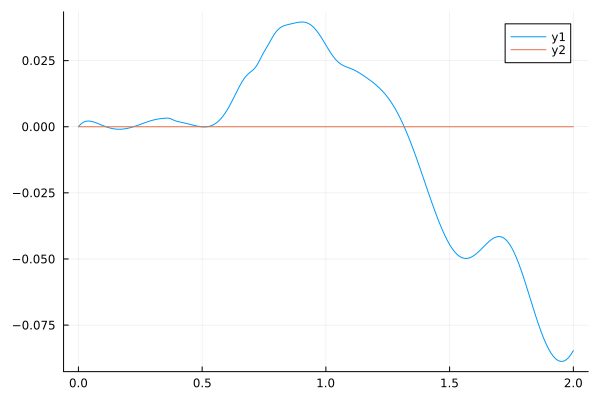
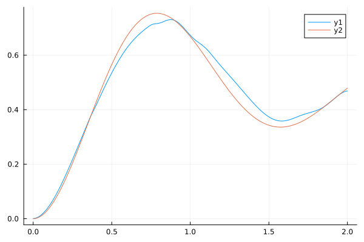
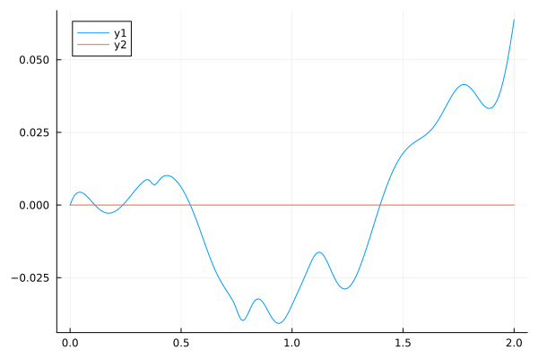
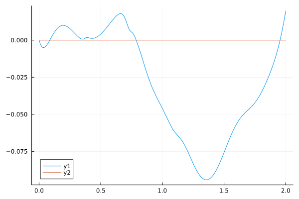
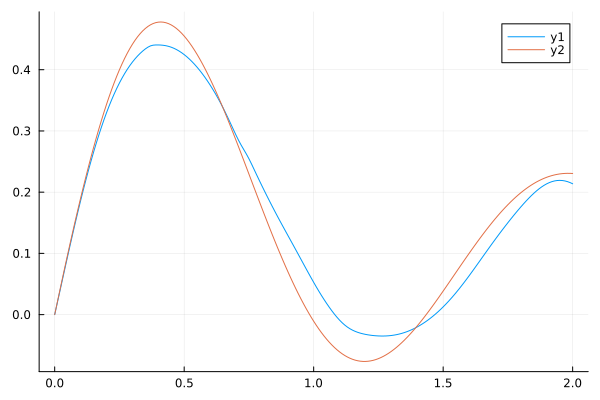
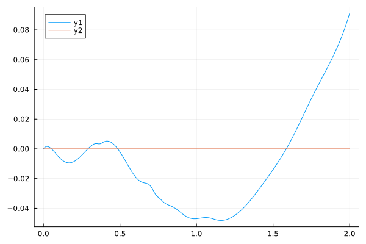
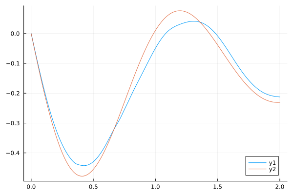

Complex Equations with PINNs
NeuralPDE supports training PINNs with complex differential equations. This example will demonstrate how to use it for NNODE. Let us consider a system of bloch equations [1]. Note QuadratureTraining cannot be used with complex equations due to current limitations of computing quadratures.
As the input to this neural network is time which is real, we need to initialize the parameters of the neural network with complex values for it to output and train with complex values.
using Random, NeuralPDE, OrdinaryDiffEq, Lux, OptimizationOptimisers, Plots
rng = Random.default_rng()
Random.seed!(100)
function bloch_equations(u, p, t)
Ω, Δ, Γ = p
γ = Γ / 2
ρ₁₁, ρ₂₂, ρ₁₂, ρ₂₁ = u
d̢ρ = [im * Ω * (ρ₁₂ - ρ₂₁) + Γ * ρ₂₂;
-im * Ω * (ρ₁₂ - ρ₂₁) - Γ * ρ₂₂;
-(γ + im * Δ) * ρ₁₂ - im * Ω * (ρ₂₂ - ρ₁₁);
conj(-(γ + im * Δ) * ρ₁₂ - im * Ω * (ρ₂₂ - ρ₁₁))]
return d̢ρ
end
u0 = zeros(ComplexF64, 4)
u0[1] = 1.0
time_span = (0.0, 2.0)
parameters = [2.0, 0.0, 1.0]
problem = ODEProblem(bloch_equations, u0, time_span, parameters)
chain = Chain(
Dense(1, 16, tanh; init_weight = kaiming_normal(ComplexF64)),
Dense(16, 4; init_weight = kaiming_normal(ComplexF64))
)
ps, st = Lux.setup(rng, chain)
opt = OptimizationOptimisers.Adam(0.01)
ground_truth = solve(problem, Tsit5(), saveat = 0.01)
alg = NNODE(chain, opt, ps; strategy = StochasticTraining(500))
sol = solve(problem, alg, verbose = false, maxiters = 5000, saveat = 0.01)retcode: Success
Interpolation: Trained neural network interpolation
t: 0.0:0.01:2.0
u: 201-element Vector{Vector{ComplexF64}}:
[1.0 + 0.0im, 0.0 + 0.0im, 0.0 + 0.0im, 0.0 + 0.0im]
[0.9986663405352191 + 0.0010466839836345604im, 0.0009274998766666953 + 0.0019708248833032334im, -0.0025959611375905344 + 0.01896999223786405im, 0.0011252406724588876 - 0.018967195944233444im]
[0.9965569281781521 + 0.0017091333856740544im, 0.002729379051924399 + 0.0033099430789679017im, -0.004177869965202744 + 0.03808417507958111im, 0.001592013771949129 - 0.0378852718876695im]
[0.9936921432585504 + 0.0020597626083118277im, 0.005375106130770346 + 0.004099361766567925im, -0.004917287183403391 + 0.05724012535739041im, 0.0015275474552095718 - 0.056692618320164576im]
[0.9900948735140132 + 0.0021639030166888617im, 0.008836350554725527 + 0.004423080359044184im, -0.004972863760836404 + 0.07634677616842182im, 0.0010484465869873571 - 0.07533419424822073im]
[0.9857896455166848 + 0.0020797874192948567im, 0.013086008210800283 + 0.004364547496355905im, -0.004489427119902352 + 0.09532284228303581im, 0.0002602084968307855 - 0.09376049141093215im]
[0.9808020279738117 + 0.001858679071373811im, 0.01809738053086499 + 0.004004560748215749im, -0.003597494624645746 + 0.1140955556360811im, -0.0007429639754809536 - 0.11192672751001047im]
[0.9751582456175959 + 0.0015451071940609168im, 0.02384352170473756 + 0.0034195766527274555im, -0.0024131400183787467 + 0.13259967307618317im, -0.0018781097562379741 - 0.12979223961275851im]
[0.9688849505519121 + 0.0011771801445580766im, 0.030296754529220957 + 0.0026803979185345494im, -0.0010381494763559173 + 0.15077671321803235im, -0.0030732649615781726 - 0.14732004493670464im]
[0.9620091059094193 + 0.0007869542601335904im, 0.03742834550681577 + 0.0018512044713122889im, 0.0004395869091655745 + 0.16857437796529431im, -0.0042670664340044686 - 0.16447653532071468im]
⋮
[0.5906146596854717 - 0.08690175459785159im, 0.4419719302123723 + 0.035482439630355904im, -0.01076391132338716 + 0.21720894653936726im, 0.06847348433310584 - 0.2068471605482225im]
[0.5865344490788963 - 0.08785582867164198im, 0.44677404112500896 + 0.03724593577139323im, -0.007869670861539717 + 0.21833568224224015im, 0.07085453778824942 - 0.2079713315173745im]
[0.5822698079994304 - 0.08846721344358557im, 0.45136548200346793 + 0.03954425496934212im, -0.004760025755956468 + 0.21901521731645077im, 0.07333439557621765 - 0.2089369694523151im]
[0.5778249784075761 - 0.08872722620940729im, 0.4556399549080912 + 0.04237688297859835im, -0.001410916719945917 + 0.21924217669725488im, 0.07592652744691021 - 0.20976002548428788im]
[0.5732104555618888 - 0.08862996585986767im, 0.4594901164493969 + 0.045731643649216815im, 0.0022012475850353413 + 0.2190156221821536im, 0.07864533584086567 - 0.21045811047330132im]
[0.5684428829557986 - 0.08817196398414376im, 0.4628092297103062 + 0.04958581732993654im, 0.006099098797539218 + 0.21833888647717234im, 0.08150611243273494 - 0.21105038907519197im]
[0.5635448160535903 - 0.08735190696842085im, 0.46549252241053346 + 0.05390746423947142im, 0.010303906902931186 + 0.21721933091472154im, 0.0845249645583245 - 0.2115574692414611im]
[0.5585443848062952 - 0.08617043497573927im, 0.4674382513885415 + 0.058656868276903im, 0.01483527392819197 + 0.21566805227632724im, 0.0877187153358319 - 0.2120012929262623im]
[0.5534748826073896 - 0.08463001744723003im, 0.46854848997281184 + 0.06378802802751887im, 0.01971092322005638 + 0.21369956165635057im, 0.09110478216622941 - 0.21240503240289754im]Now, let's plot the predictions.
u1:
plot(sol.t, real.(reduce(hcat, sol.u)[1, :]));
plot!(ground_truth.t, real.(reduce(hcat, ground_truth.u)[1, :]))
plot(sol.t, imag.(reduce(hcat, sol.u)[1, :]));
plot!(ground_truth.t, imag.(reduce(hcat, ground_truth.u)[1, :]))
u2:
plot(sol.t, real.(reduce(hcat, sol.u)[2, :]));
plot!(ground_truth.t, real.(reduce(hcat, ground_truth.u)[2, :]))
plot(sol.t, imag.(reduce(hcat, sol.u)[2, :]));
plot!(ground_truth.t, imag.(reduce(hcat, ground_truth.u)[2, :]))
u3:
plot(sol.t, real.(reduce(hcat, sol.u)[3, :]));
plot!(ground_truth.t, real.(reduce(hcat, ground_truth.u)[3, :]))
plot(sol.t, imag.(reduce(hcat, sol.u)[3, :]));
plot!(ground_truth.t, imag.(reduce(hcat, ground_truth.u)[3, :]))
u4:
plot(sol.t, real.(reduce(hcat, sol.u)[4, :]));
plot!(ground_truth.t, real.(reduce(hcat, ground_truth.u)[4, :]))
plot(sol.t, imag.(reduce(hcat, sol.u)[4, :]));
plot!(ground_truth.t, imag.(reduce(hcat, ground_truth.u)[4, :]))
We can see it is able to learn the real parts of u1, u2 and imaginary parts of u3, u4.
- 1https://steck.us/alkalidata/